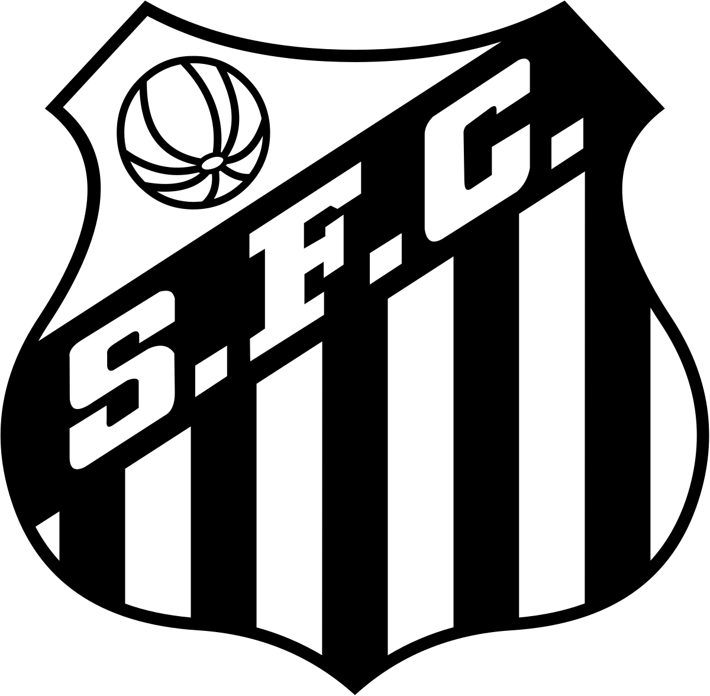

Escolha um time para saber mais informações
 Corinthians
Corinthians
 Palmeiras
Palmeiras

Santos FC
 São Paulo FC
São Paulo FC
CORINTHIANS
- Quantos títulos mundiais o Corinthians tem? O Timão venceu o Mundial de Clubes em 2000 e 2012.
- Quantos títulos brasileiros o Corinthians tem? São sete: 1990, 1998, 1999, 2005, 2011, 2015 e 2017.
- Quantos títulos da Copa do Brasil o Corinthians tem? Três: 1995, 2002 e 2009. O Timão ainda conquistou a Supercopa do Brasil em 1991.
- Para ganhar um desconto de 20% na compra de uma camisa do timão responda a pergunta a seguir corretamente. Quantos campeonatos paulistas o corinthians tem ?
PALMEIRAS
- Quantos títulos mundiais o Palmeiras tem? Em 1951, o Palmeiras venceu o Torneio Internacional de Clubes Campeões (Copa Rio). Na época, a competição era equivalente ao Mundial de Clubes.
- Quantos títulos brasileiros o Palmeiras tem? O Palmeiras é o maior vencedor do Brasileirão, com dez títulos: 1960, 1967, 1967 (Taça Brasil), 1969 1972, 1973, 1993, 1994, 2016 e 2018.
- Quantos títulos da Copa do Brasil o Palmeiras tem? Três: 1998, 2012 e 2015.
- Para ganhar um desconto de 20% na compra de uma camisa do verdão responda a pergunta a seguir corretamente. Em qual ano o Palmeiras foi fundado ?
SÃO PAULO
- Quantos títulos mundiais o São Paulo tem? Em 2005, o São Paulo campeão do Torneio Internacional de Clubes
- Quantos títulos brasileiros o São Paulo tem? O São Paulo possui seis titulos de campeonatos Brasileiros: 1977, 1986, 1991, 2006, 2007 e 2008
- Quantos títulos da Copa do Brasil o São Paulo tem? Zero: O São Paulo não tem nenhuma copa do Brasil.
- Para ganhar um desconto de 20% na compra de uma camisa do tricolor responda a pergunta a seguir corretamente. Em qual ano o São Paulo conquistou o mundial de clubes ?
SANTOS
- Quantos títulos mundiais o Santos tem? O Santos foi campeão do mundial de clubes em Mundial de Clubes 1962 e 1963
- Quantos títulos brasileiros o Santos tem? O Santos possui dois titulos de campeonato Brasileiro, conquistado em 2002 e 2004
- Quantos títulos da Copa do Brasil o Santos tem? O Santos possui um titulo da copa do Brasil que foi conquistado em 2010
- Para ganhar um desconto de 20% na compra de uma camisa do Santos FC responda a pergunta a seguir corretamente. Quantas libertadores o Santos conseguiu conquisatr ?